hugo meets github pages
hugo와 github pages로 블로그를 만들어보자
- git과 github, 그리고 github pages에 대한 설명은 이 post에선 다루지 않는다.
- 참고: github pages guide
Overview
hugo
- tatic site generator. markdown 문서를 html로 바꿔준다고 생각하자
- theme을 생성하거나 적용할 수 있으며, local 에서 블로그를 동작시켜 볼 수 있다
github pages
- github에 repository를 만들어 github pages, 즉 블로그로 이용할 수 있다.
hugo meets github pages
- hugo로 생성한 블로그를 git을 사용하여 github pages 에 올리고 관리한다
Process
1. Hugo 설치
- hugo homepage 에서 hugo를 다운로드 한 다음
아래와 같이 폴더를 구성하고 bin 폴더에 다운로드한 파일을 넣어둔다 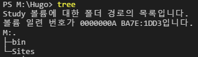
windows 환경변수의 PATH에 hugo 실행파일의 위치를 추가한다.
- 위의 경우는 M:\Hugo\bin 이 된다.
2. Site 생성
local에 블로그를 생성한다고 생각하자
site 생성
- hugo new site JustHS
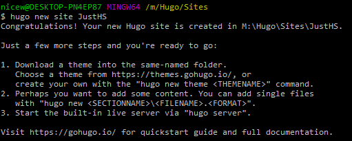 - 아래와 같이 JustHS 라는 폴더와 하위 폴더, 파일들이 생성된다. 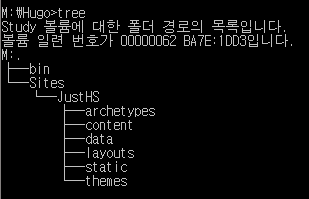
- hugo new site JustHS
theme
- JustHS 에서 사용할 theme을 골라서 설치한다
여기서는 hugo-steam-theme을 골랐다.
- hugo-steam-theme github
- hugo-steam-theme demo
- git clone 후 hugo-steam-theme 폴더의 .git 폴더는 삭제하였다
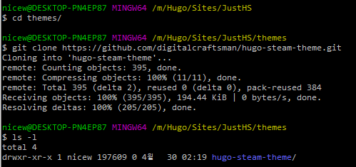
현 시점에서 JustHS site (혹은, 블로그)가 생성되었다고 생각하자
아래 빨간 사각형 부분이 JustHS site 이며 우리는 이부분만을 git 으로 관리할 것이다 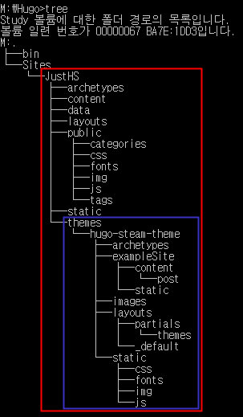
JustHS 폴더의 config.toml 파일은 이 site에 대한 설정파일로 보면 된다.
- 세부 설정, 수정은 잠시후 살펴보며
- 우선은 hugo-steam-theme에서 제공하는 config.toml 을 가져다 덮어쓰자
현 시점에서의 간단한 동작 확인
- hugo server를 실행하면 site가 생성되고, local server, 즉, 내 컴퓨터에서 볼 수 있다
- 안내되는 주소로 브라우저에서 볼 수 있다.
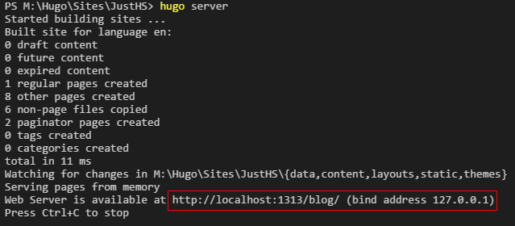
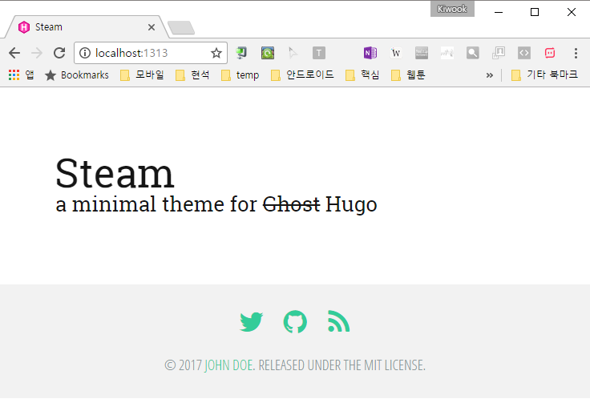
3. Github repository
Repository 생성
본인의 github에 repository 생성. 여기서는 blog 라고 생성하였다. 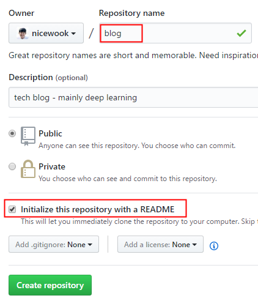
repository 주소는 다음과 같다 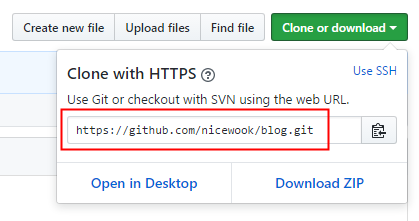
4. Hugo meets Github pages
hugo로 생성한 site를 github에 올려보자
1) config.toml 설정하기
- JustHS 폴더에 있는 config.toml을 조금 변경해준다
- baseurl
- http://username.github.io/blog/
- 생성한 site의 최상위 폴더라고 생각하자
- theme
- hugo-steam-theme
- publishDir
- hugo는 default로 public 폴더에 블로그 내용을 생성한다.
- 이를 github page에서 지원하는 docs 폴더 로 변경해주자
- 댓글을 달 수 있는 disqus 설정의 상세설명은 생략한다. disqusShorname을 할당받아 적어주면 된다
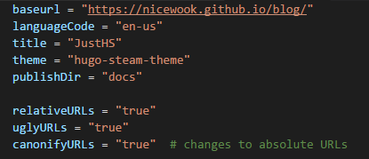
- baseurl
중요한 개념을 짚고 넘어가자
site 최상위는 JustHS라는 폴더이고, 이 폴더와 모든 하위 폴더를 github의 blog repository에 올려둔다
하지만 우리가 hugo로 생성하는, 웹상에서 보여질 내용은 /docs 폴더에 생성되며
github pages는 /docs 폴더의 내용을 보여줄 것이다.
2) hugo로 site 생성
JustHS 폴더에서 hugo 실행 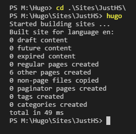
config.toml에서 설정한대로 docs 폴더에 생성된다 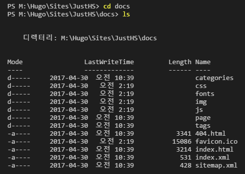
3) site를 git으로 관리하자
- 여기까지는 local 에서의 git 관리이며, 이후 github의 repository와 연동될 것이다
아래와 같은 명령으로 JustHS 폴더가 local에서 git으로 관리된다
git init git add . git commit -m 'initialize'
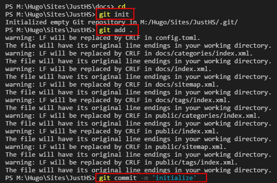
4) github repository와 연동
JustHS 폴더에서 아래를 실행한다
git remote add origin https://github.com/nicewook/blog.git # 원격 저장소를 추가하고 origin이라 부르겠다는 의미 git pull origin master --allow-unrelated-histories # github 저장소의 변경사항을 local로 가져온다. # 두 git의 base가 같지 않아 생기는 fatal: refusing to merge unrelated histories 문제 해결을 위해 # --allow-unrelated-histories 옵션을 붙임 git push origin master # github의 blog repository로 local에서 생성한 JustHS site를 push한다
5) Github pages 설정
- push를 통해 github의 blog repository에 JustHS site가 올라간 상태
- 따라서, /docs 폴더역시 있다.
이 폴더를 github pages 에서 보여줄 source로 설정한다 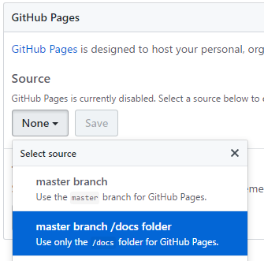
브라우저에서 http://username.github.io/blog 를 열면 블로그가 실행된다.
todolist
[ ] first posting
[ ] custom domains
[ ] add categories